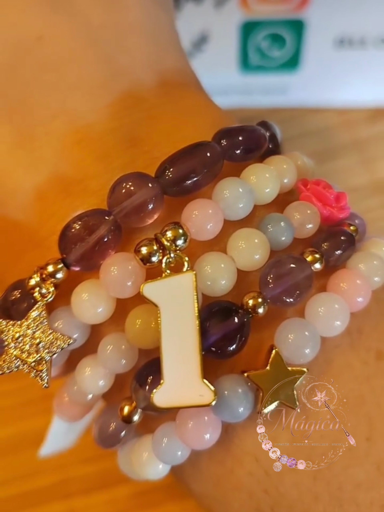
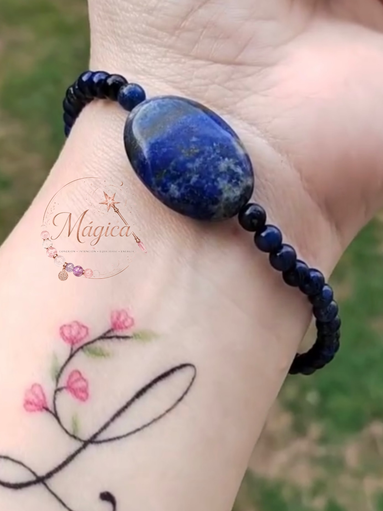
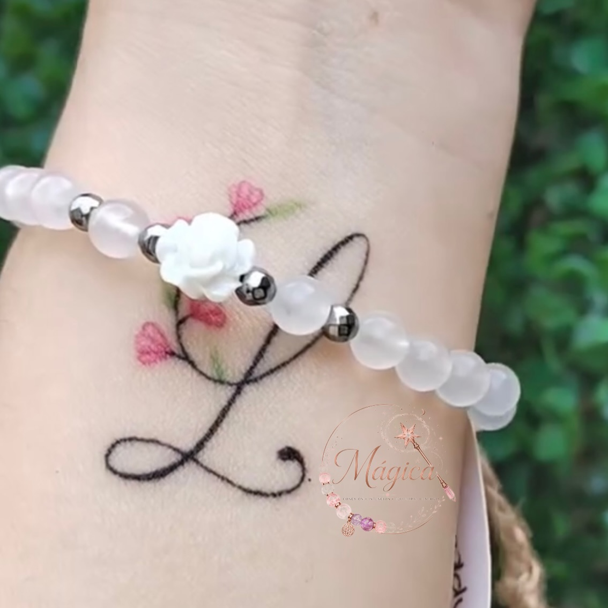

★★★★★
Compra Verificada
"El estuche The Rose Vault es un espectáculo en sí mismo, pero cuando abrí el cofre y toqué el Lapislázuli Imperial sentí una vibración y frialdad mineral inconfundible. Es alta joyería con alma."
Cuarzos sagrados seleccionados uno a uno por su pureza cristalina y resonancia armónica a 432 Hz. Un amuleto consciente de $89.00 USD forjado en orfebrería fina para ser el testamento silencioso de tu poder personal.
Yacimientos sostenibles seleccionados. Minerales no irradiados químicamente.
Herrajes bañados en oro de 18K y plata pulida con resistencia perpetua.
Limpia ritualizada con salvia blanca y brisa de cuarzos antes de ser sellada.
Cofre rígido marfil magnético, saco de gamuza y certificado de folio único.
Sincroniza tu energía natal con la gema que tu campo áurico requiere en este momento. Selecciona tu intención y signo zodiacal para recibir la recomendación armónica.
Selecciona tu Intención Principal y tu Signo Zodiacal para que el oráculo revele tu mineral rector con frecuencia de 432 Hz.
Fotografías reales de nuestra orfebrería de taller. Cada pieza es irrepetible en tonalidad, gramaje y veta mineral.
No creemos en la producción en masa ni en minerales sintéticos. Cada pulsera de Mágica nace bajo la premisa de la alta orfebrería meditada: seleccionar la gema con la gravedad, brillo y resonancia precisa para su guardián.
Inspección microscópica de vetas, dureza Mohs y saturación de color natural en cada esfera y cabujón.
Cada pulsera descansa sobre drusa de cuarzo cristal y es bañada acústicamente con cuencos de cuarzo antes de ser embalada.
Recibe tu pieza dentro del exclusivo cofre rígido marfil con pan de oro rosa, listo para obsequiar o atesorar.
Valorado en $35 USD, incluido de cortesía con tu inversión de $89 USD:
Descubre cómo lucen nuestras piezas en el día a día. Aprende a combinar dos o tres brazaletes para crear una armonía estética imponente y multiplicar sus efectos bioenergéticos.

El Trío de la SabiduríaLa combinación predilecta para profesionales y líderes creativos. Mientras la amatista purifica la mente de sobrecarga mental, el cuarzo cristal amplifica la intención y los acentos dorados anclan la prosperidad.

Pieza Solitaria de AutorUna presencia imponente por sí sola. Su gema central ovalada reposa en el pulso interior, estimulando la serenidad y la comunicación persuasiva.

Delicadeza SublimeTonos pasteles translúcidos que armonizan con atuendos en lino, seda o blanco puro. Suave al tacto y dotada de hematitas que desvían tensiones.
Cada muñeca es un templo único. Nuestras piezas son ensambladas con cordón elástico náutico de memoria indeformable o confeccionadas a tu medida personalizada.
Selecciona tu circunferencia aproximada para conocer el calce recomendado:
Nuestra medida signature más vendida. Brinda caída fluida y elegante con libertad de movimiento en la muñeca.
✓ Todos nuestros hilos utilizan silicona náutica con memoria elástica indeformable y garantía de ajuste perpetuo.Cada cuenta es una obra de arte geológica con variaciones cromáticas naturales irrepetibles. No usamos resinas ni imitaciones plásticas.
Herrajes tratados con doble capa galvánica de sellado protector antialérgico, libre de níquel y plomo para pieles sensibles.
Cuádruple trenzado elastomérico japonés con memoria de tracción, resistente al uso continuo sin holguras prematuras.
Mujeres y hombres de alta exigencia que eligen MÁGICA como su escudo energético diario.
"El estuche The Rose Vault es un espectáculo en sí mismo, pero cuando abrí el cofre y toqué el Lapislázuli Imperial sentí una vibración y frialdad mineral inconfundible. Es alta joyería con alma."
"Tenía dudas sobre mi talla y por WhatsApp me atendieron como si estuviera en una boutique de la Quinta Avenida. La pulsera de Turmalina Negra y Pez Dorado no me la quito nunca para mis juntas de consejo."
"Compré el Jade Dorado y el Cuarzo Blanco para hacer Stacking como sugieren en la web. La elegancia de las rondelas doradas y la suavidad del jade es inigualable. Llegó a Miami en solo 3 días."
Todo lo que deseas saber sobre nuestros minerales sagrados, envíos asegurados y rituales de conservación.
Todos los minerales de MÁGICA son seleccionados en bruto de yacimientos éticos certificados. Cada gema posee inclusiones microscópicas naturales (como la pirita dorada en el lapislázuli o las vetas nubosas del cuarzo blanco), manteniendo la densidad, frialdad mineral y resonancia que ningún vidrio o resina plástica puede replicar. Cada orden se entrega con su Certificado de Autenticidad Mineral numerado.
Antes del sellado en su cofre The Rose Vault, cada pieza pasa por una doble limpieza energética: un sahumerio sutil de salvia blanca y palo santo cultivado éticamente, seguido de un reposo sobre drusas de cuarzo cristal y armonización acústica con cuencos de cuarzo afinados a la frecuencia sanadora de 432 Hz, asegurando que tu joya llegue a ti con su campo áurico neutro y listo para programar tu intención.
Por tu inversión fija de $89.00 USD, recibes de cortesía nuestro empaque de alta gama (valorado en $35 USD): cofre rígido de cierre magnético con pan de oro rosa, bolsa de gamuza de viaje, paño abrillantador de orfebrería, el Certificado Nominativo de Autenticidad y la Guía Impresa de Recarga y Cuidados Lunares.
En el probador interactivo de nuestra web y en el checkout puedes seleccionar entre 15cm (Petite), 16.5cm (Estándar más habitual) y 18cm (Comfort). Si tienes una medida específica, puedes marcar Personalizada y tu concierge privada verificará el centímetro exacto por WhatsApp antes de confeccionar el nudo. Contamos con garantía total de ajuste.
Ofrecemos envío express prioritario asegurado sin costo adicional. Los envíos nacionales tardan de 2 a 4 días hábiles, mientras que los envíos internacionales (EE.UU., Canadá, Europa y Latinoamérica) se entregan entre 4 y 7 días hábiles con número de seguimiento satelital privado.
Aunque nuestros herrajes en oro de 18K y plata 925 cuentan con sellado hidrófugo y el hilo elástico es de silicona náutica, recomendamos retirar la pieza antes de entrar al mar, albercas con cloro o saunas para preservar el lustre del oro y la vibración sutil de la piedra. Puedes dormir con ella si buscas protección y sueños lúcidos.
Únete a nuestra logia privada de coleccionistas. Recibe el calendario lunar de recarga de gemas, acceso 48 horas antes a lotes minerales únicos y lecturas astrológicas de luna llena.
Completa tus datos para emitir tu certificado nominativo con folio reservado y preparar tu entrega asegurada.